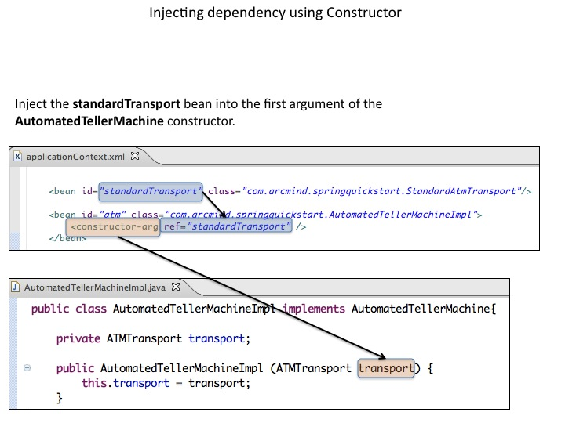

Created by Juan Manuel Dodero / @jmdodero
Cube - Page - Concave - Zoom - Linear - Fade - None - Default
Default -
Sky -
Beige -
Simple -
Serif -
Night
Moon -
Solarized
ATM Implementation does not care about the transport
public interface AutomatedTellerMachine {
void deposit(BigDecimal bd);
void withdraw(BigDecimal bd);
}
public interface ATMTransport {
void communicateWithBank(byte [] datapacket);
}
public class AutomatedTellerMachineImpl implements AutomatedTellerMachine{
private ATMTransport transport;
public void deposit(BigDecimal bd) {
...
transport.communicateWithBank(...);
}
public void withdraw(BigDecimal bd) {
...
transport.communicateWithBank(...);
}
public void setTransport(ATMTransport transport) {
this.transport = transport;
}
}
public class SoapAtmTransport implements ATMTransport {
public void communicateWithBank(byte[] datapacket) {
...
}
}
public class StandardAtmTransport implements ATMTransport {
public void communicateWithBank(byte[] datapacket) {
...
}
}
public class SimulationAtmTransport implements ATMTransport {
public void communicateWithBank(byte[] datapacket) {
...
}
}
DI without Spring
public class AtmMain {
public void main (String[] args) {
AutomatedTellerMachine atm = new AutomatedTellerMachineImpl();
ATMTransport transport = new SoapAtmTransport();
/* Inject the transport. */
((AutomatedTellerMachineImpl)atm).setTransport(transport);
atm.withdraw(new BigDecimal("10.00"));
atm.deposit(new BigDecimal("100.00"));
}
}
ATMTransport transport = new SimulationAtmTransport();
((AutomatedTellerMachineImpl)atm).setTransport(transport);
DI with Spring
import org.springframework.context.ApplicationContext;
import org.springframework.context.support.ClassPathXmlApplicationContext;
public class AtmMain {
public static void main (String[] args) {
ApplicationContext appContext = new ClassPathXmlApplicationContext("classpath:./spring/applicationContext.xml");
AutomatedTellerMachine atm = (AutomatedTellerMachine) appContext.getBean("atm");
atm.withdraw(new BigDecimal("10.00"));
atm.deposit(new BigDecimal("100.00"));
}
}
ApplicationContext XML
proporciona...
Using constructor to inject dependency
Application context
Constructor
public class AutomatedTellerMachineImpl implements AutomatedTellerMachine{
private ATMTransport transport;
public AutomatedTellerMachineImpl (ATMTransport transport) {
this.transport = transport;
}
}
Olvidamos inyectar la dependencia...
Pedimos a spring que lo compruebe: @Required
import org.springframework.beans.factory.annotation.Required;
public class AutomatedTellerMachineImpl implements AutomatedTellerMachine{
private ATMTransport transport;
@Required
public void setTransport(ATMTransport transport) {
this.transport = transport;
}
}
Definimos un transporte por defecto: @Autowire y @Qualifier
import org.springframework.beans.factory.annotation.Autowired;
import org.springframework.beans.factory.annotation.Qualifier;
public class AutomatedTellerMachineImpl implements AutomatedTellerMachine{
@Autowired (required=true)
@Qualifier ("standardTransport")
private ATMTransport transport;
}
Application context con anotaciones
XML DI tiene precedencia sobre las anotaciones
The evolution of a Software Engineer
On coming full circle